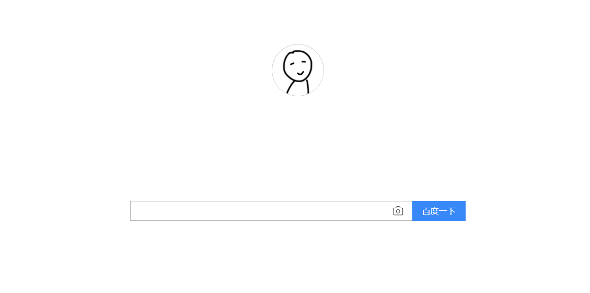

RS
card
关于
技能
作品
作品1
作品2
作品3
博客
作品1
作品2
作品3
日历
联系方式
其他
hello
陈创
前端开发工程师
年龄
22
所在城市
温州
邮箱
chchuang@foxmail.com
手机
13587862772
下载 PDF 简历
陈创，前端工程师
技能：前端开发，Rails开发，Node.js开发
技能
HTML 5 & CSS 3
Node.js
JavaScript
jQuery
vue
React
作品集
